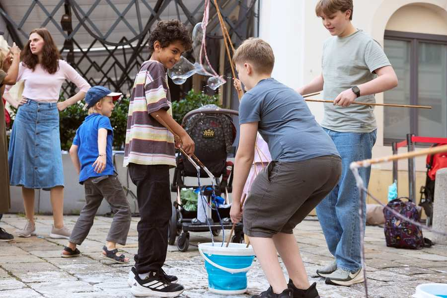
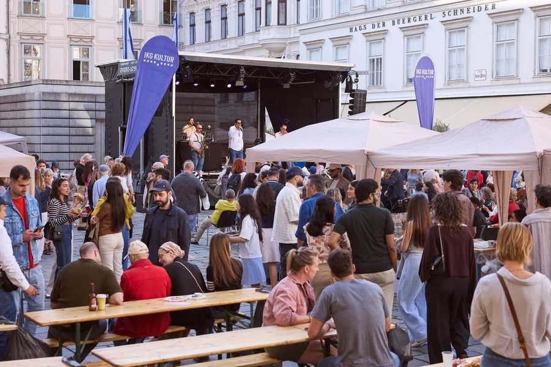
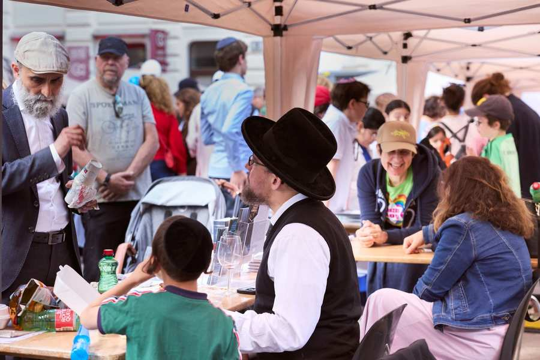
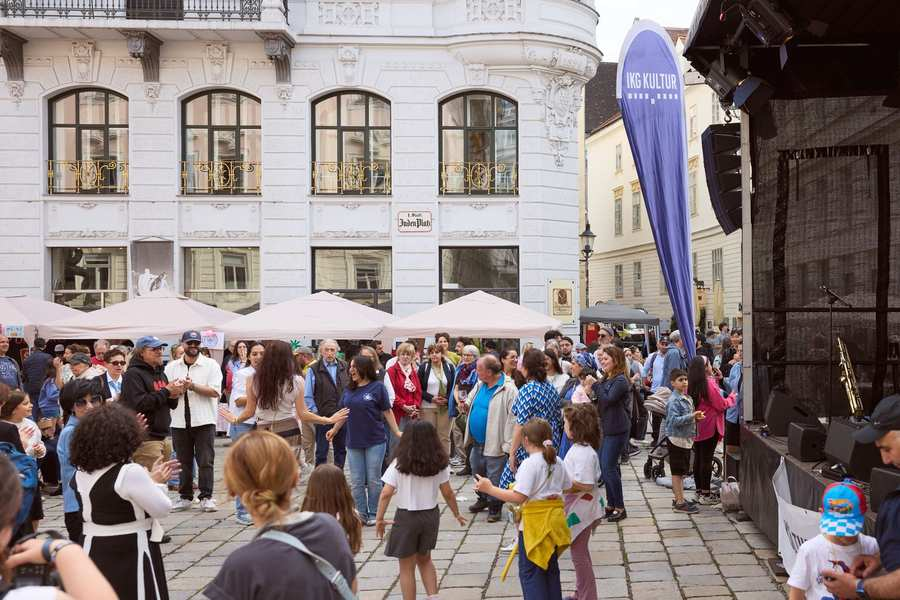
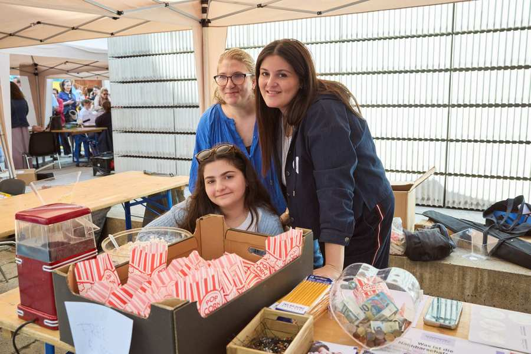
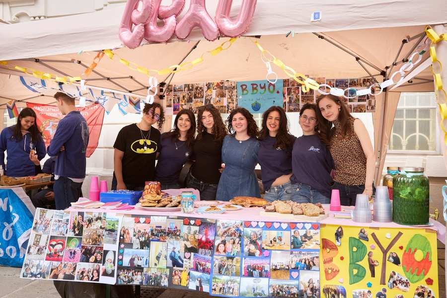
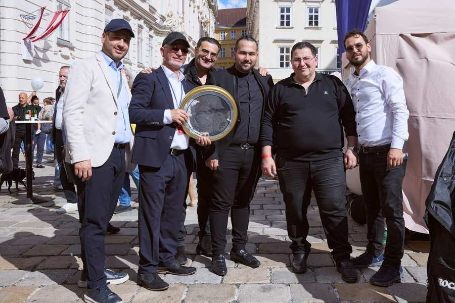
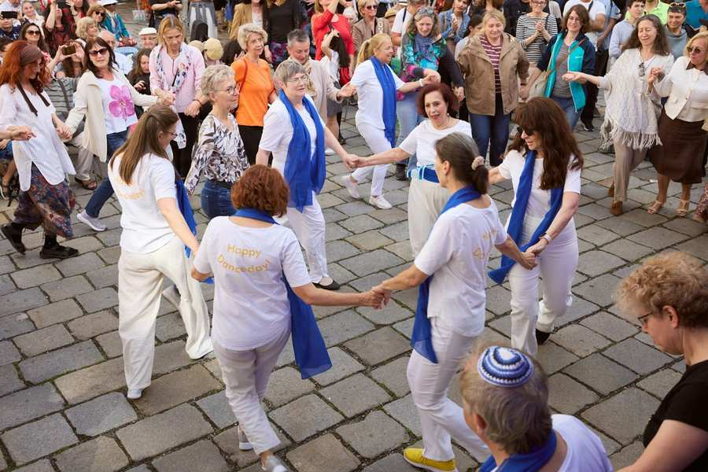
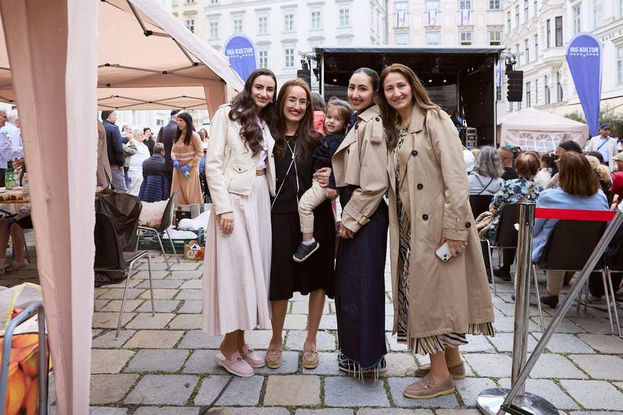

Am 14. Juni wurde der Judenplatz bei angenehmem Sommerwetter - es war nicht zu heiß und und nicht zu kalt - erneut zum Schauplatz eines lebendigen Festes der Begegnung. Ab dem frühen Nachmittag nutzten zahlreiche Besucherinnen und Besucher die Gelegenheit, gemeinsam die Vielfalt jüdischen Lebens in Wien zu feiern. Die sonnige Atmosphäre, das abwechslungsreiche Programm und das rege Kommen und Gehen auf dem Platz machten den Judenplatz bis in die Abendstunden zu einem Ort voller Lebensfreude.
Für musikalische Höhepunkte sorgten die Auftritte der Brüder Meirov Band mit ihrem traditionellen bucharischen Trommelspiel und der Noya Showband mit schwungvoller israelischer Tanzmusik. Mit ihren mitreißenden Darbietungen schufen sie eine ausgelassene Atmosphäre, die viele Gäste zum Verweilen einlud. Auch die Tanzgruppe Tirkedu Rikudei-Am begeisterte das Publikum mit ihrem Auftritt und trug zur festlichen Stimmung bei. Vor der Bühne wurde immer wieder getanzt, geklatscht und mitgefeiert – ein Zeichen dafür, wie sehr die Musik die Menschen zusammenbrachte.
Großes Interesse galt den zahlreichen Informations-, Kunst- und Verkaufsständen. Jüdische Organisationen, Initiativen und Kreativschaffende präsentierten ihre Arbeit und boten Einblicke in die Vielfalt jüdischen Lebens und kulturellen Schaffens in Wien. Viele Besucherinnen und Besucher nutzten die Gelegenheit, sich auszutauschen, Neues zu entdecken und mit den Ausstellenden ins Gespräch zu kommen.
Auch kulinarisch hatte das Straßenfest einiges zu bieten. Die Gäste konnten eine breite Auswahl an koscheren Speisen und süßen Köstlichkeiten genießen. Die gastronomischen Angebote wurden den ganzen Tag über gerne angenommen. Neben Shawarma, Falafel, Sabich und traditionellen bucharischen Spezialitäten sorgten auch süße Köstlichkeiten für Genuss.
Für die jüngsten Besucherinnen und Besucher gab es ebenfalls viel zu erleben. Die Hüpfburg, fantasievolle Schminkstationen und die beliebte Seifenblasenstation sorgten für strahlende Gesichter und jede Menge Unterhaltung. So wurde das Straßenfest zu einem Erlebnis für die ganze Familie.
Das jüdische Straßenfest 2026 zeigte einmal mehr, wie wichtig Orte der Begegnung, des kulturellen Austauschs und des gemeinsamen Feierns sind. Der Judenplatz verwandelte sich für einen Tag in einen offenen und lebendigen Treffpunkt, an dem Gemeinschaft, Vielfalt und Lebensfreude im Mittelpunkt standen.
Fotos









